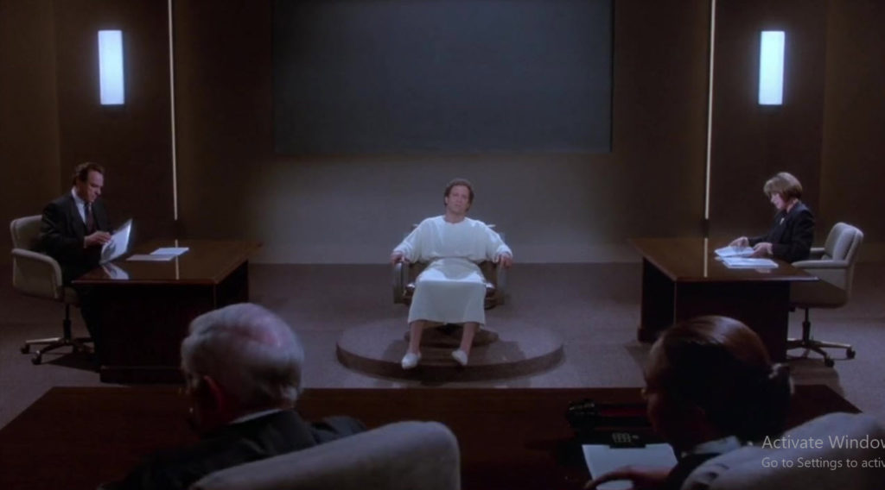
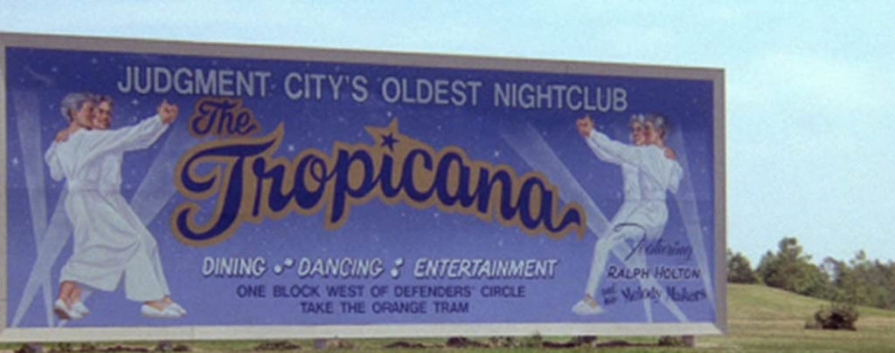
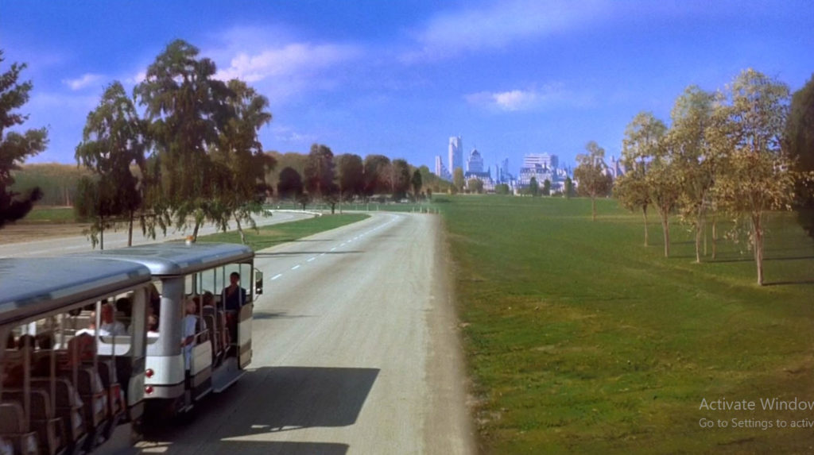
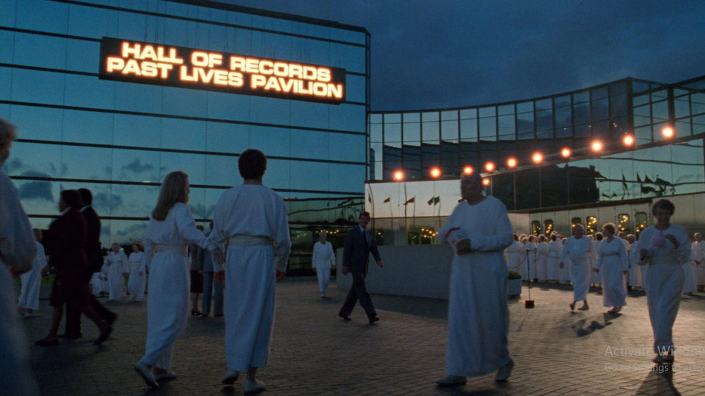

There’s a great movie from the 1990’s titled “Defending your life”. It’s a fantasy movie about what it is like when you die, and you have to justify the kind of life that you had when you were alive. It’s a fun movie, a lite comedy romance. It’s fun. But I want to look at it from are more serious angle. And that is what we are going to do here.
Advertising executive Daniel Miller dies in an auto accident and finds himself in Judgment City. He is taken to a hotel to rest, and the next day he takes a tram downtown to meet his lawyer, Bob Diamond (Rip Torn). Diamond informs him that there is to be a five-day examination of his life to decide whether he has overcome fear. At a comedy club he meets Julia and they fall in love. But as their trials progress, it becomes clear Julia has overcome fear and is moving on, while Daniel seems doomed to go back to Earth. —Diana Barahona
It is Albert Brooks‘ notion in this film that after death we pass on to a sort of heavenly way station where we are given the opportunity to defend our actions during our most recent lifetime.
The process is like an American courtroom, with a prosecutor, defense attorney and judge, but the charges against us are never quite spelled out. The basic question seems to be, are we sure we did our best, given our opportunities?

In the movie, Brooks plays Dan Miller, a successful exec who takes delivery on a new BMW and plows it into a bus while trying to adjust the CD player. He awakens in a place named Judgment City, which resembles those blandly modern office and hotel complexes around big airports. He’s given a room in a clean but spartan place that looks franchised by Motel 6.
At first Dan is understandably dazed at finding himself dead, but the staff takes good care of him. He’s dressed in a flowing gown, whisked around the property on a bus, and told he can eat all he wants in the cafeteria (where the food is delicious but contains no calories).
Then he meets his genial, avuncular defense attorney (Rip Torn), and his hard-edged prosecutor (Lee Grant). It’s time for the courtroom, in which we see flashbacks to Dan’s life as he tries to explain himself.
… (and) he falls in love with another sojourner in Judgment City.
She is a sweet, open-faced, serene young woman named Julia and played, of course, by Meryl Streep, who is the only actress capable of providing the character’s Streepian qualities. They fall into like with one another.
Dan visits her hotel and is dismayed to discover that she has much better facilities than he does – Four Seasons instead of Motel 6 – and he wonders if maybe your hotel assignment is a clue about how well you lived your past life. But nobody in Judgment City will give him a straight answer to a question like that.

The best thing about the movie, I think, is the notion of Judgment City itself. Doesn’t it make sense that heaven, for each society, would be a place much like the Earth that it knows? We’re still stuck with images of angels playing harps, which worked fine for Renaissance painters. But isn’t our modern world ready for images in which the angels look like Rotarians and CEOs?
The movie is funny in a warm, fuzzy way, and it has a splendidly satisfactory ending.
MM Thoughts
The movie is a fiction.
But it does get a number of things right.
- Review Process. There is always a review process once you exit the physical reality and return to the non-physical reality.
- Judgement of your Actions. Yes, you are judged by your actions. There is no escape from that.
- No Golden Harps. Forget the notions of golden harps, big diamonds and all those other images that are so conventional regarding the non-physical reality. There are other “things” in the non-physical reality, and you might be surprised how “futuristic”, and yet “conventional” they actually are. As well as the enormous scale of them.
- Not immediately returned via reincarnation. Certainly the narrative from “Alien Interview” cautions that consciousness is immediately processed and thrown back to the physical Earth reality, without memories, but that is not my experience. Nor is that the experience of Dr. Newton.
- Planning is required. A return back to the earth physical reality requires work, planning, and coordination. The only way that consciousness can return back and enter a new born body quickly is if the consciousness is being “punished” in some way. Like for attempting suicide or something like that.
How do I know all this? Well, as I have stated that there are channels, and to continue my ELF interactions it is (was) with another entity and that provided me insight. Not to mention that the EBP provides <redacted>.

I strongly urge people to watch this movie.
Because there are so many things in the non-physical world that resemble what we have in the physical world that you would be astounded.
Also you all need to recognize that the overall sequence is obtain experiences, die, review, map out more experiences, and repeat.

The general human on Earth sequence
- Birth in a body
- Obtain experiences.
- Die.
- Life review.
- Map out what is next.
- If Earth as a human, then…
- Repeat.
Alien Interview
I have discussed the book “Alien Interview” elsewhere. I personally believe that it is exactly what it says it is.
I believe [1] the back-story that the documents were actual transcripts of an interrogation with a type-1 grey extraterrestrial in 1947. I also [2] believe that everything that was recorded and written down are what the extraterrestrial said, and further, [3]I believe that it was mostly truthful and [4] saying things truthfully based on it’s understanding in 1947. All in a way or manner that [5] would be understood by the post world-war II generals and leaders gathered at the Roswell military base.
However, as I parsed the book in great detail, I came to realize the there were some elements within the statements that could easily be misunderstood.
Earth as a “Prison Planet” and us convicts and felons within it, are immediately recycled back to Earth upon death, over and over and there is no escape…
…however, it listed numerous people who have actually managed to escape this environment. One has total recall and made great contributions to this region and was reassigned elsewhere in the universe.
So, obviously there ARE avenues of egress.
Further, this “Alien Interview” event spawned the creation of MAJestic shortly afterwards, and it enlisted folk like myself (MM) and we were tasked with “participating in events that were bigger than any government, and that mattered to the entire human species”.
For the period from the creation of MAJestic to today, the type-1 greys (and a number of other species) have been working with MAJestic towards certain objectives, goals, and directives.
I cannot help but believe that there has been some substantial changes in the situation of 1947 to today in 2021. And these changes have manifested in many ways. Such as [1] the ability to map out the topography of Heaven like Dr. Newton has (HERE), and [2] the recovery of memories of reincarnation that we see from time to time, and [3] the growth of the “new age” movements.
Whether the “constructions”, “arrangements” and the extensive geography of the non-physical reality is a [1] fabrication designed to entrap us earth-bound prisoners, or actually [2] the non-physical reality that surrounds the earth is unknown.
My personal belief is that the non-physical reality is exactly that. And the systems that force earth humans to immediately return to earth is broken. It no longer exists. However, what does exist is a massive non-physical infrastructure that is dedicated to humans experiencing and obtaining physical experiences. These experiences are all recorded in memories and still exist and are not erased. At least I can access them, and I very convinced that others can as well.
My constant entanglement with the EBP, as well as how my ELF probes worked before I was “retired” clearly indicate that there is a vibrant and active non-physical world all around us. Older and more advanced species enter and leave this reality at will.
It is complex, active, vibrant, and substantive. You not need to fear it, or to remember one time when you were “put under anesthesia” before an operation and blanked out with no memories. That was not death. That was something different. You should never believe that being put under by drugs is the same experience that you would have upon death.
This is a fun movie, but it reminds us that our actions as we live all have consequences. You can believe that it is “karma”. You can call it cycling through “reincarnations”. You can believe that it is “quantum associations”, or that “like thoughts attract like actions”. You can believe what ever seems most comfortable with you.
But I will definitively tell you that there is a community that exists outside of our reality, and it is populated with humans (and a lot of other “stuff”). And if you want to (as they say in the movie “move on to bigger and better things”) make this life a good one.
Make this life a great one.
Make a difference in this world. Help others. Do great things. Perform great works. Smile. Be the sunshine that helps others. Do not be the dark pit of blackness that takes and takes from others. Don’t do that.
Be kind and be helpful.
In the non-physical reality you will glow like a big beacon or torch. And others of similar beliefs will be attracted to you. Be great. You will be wonderful.
Watch the movie, and tell me what you all think.
USA Streaming Access to the movie…
If you are in the United States, these are your best streaming options. All are with a price. Nothing is free in the USA.
Other Access Alternatives
- HuLu (Subscription required)
- Watch Defending Your Life Full Movie – video Dailymotion
- Defending Your Life (1991) – Stream and Watch Online
- Watch ‘Defending Your Life’ on HBO Max – Stream of the …
- You Tube
- Amazon (Subscription required)
- Google Play
Torrents
If you don’t mind waiting for the download, you can download a torrent for the movie…
- Defending Your Life (1991) YIFY – Download Movie …
- Your.Life.1991.720p.BluRay.999MB.HQ.x265.10bit …
- Defending Your Life (1991) Criterion 1080p BluRay X265 …
- Defending Your Life (1991) YIFY – Download Movie TORRENT …
- Defending Your Life (1991) [1080p] [BluRay] [YTS.MX]
- Download torrent Defending.Your.Life.1991.720p.WEB …